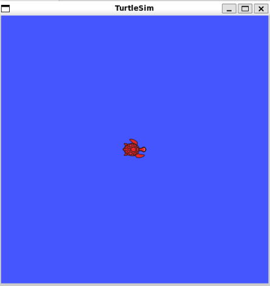
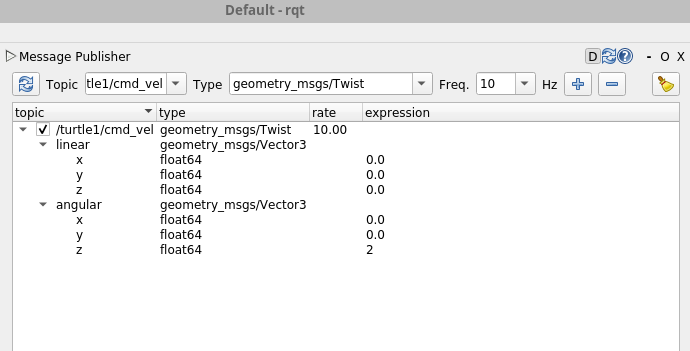
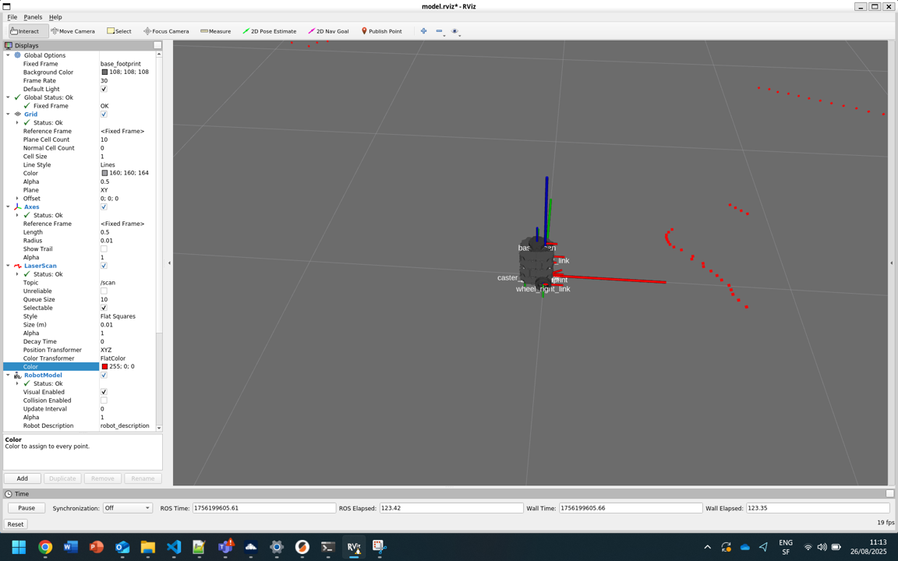
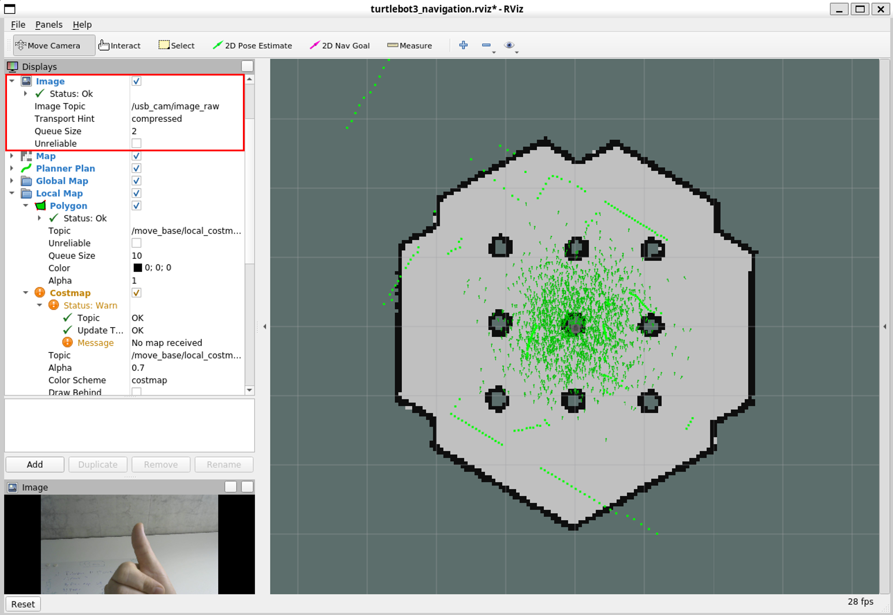

Introduction to ROS and Turtlebot3
Human-IST, ProtoFab, LearningLab, UniFR
ProtoFab Assignment 2: Introduction to ROS and Turtlebot3
Introduction
This practical work focuses on learning the basic concepts of ROS through small independent tasks. Each task consists of applying hands-on commands in the terminal to illustrate how ROS and Turtlebot3 work. Note that Task 4 is the only task of this assignment where you will have to develop code on your own!
In this practical work, you will perform the following tasks:
Task 1 – Explore ROS and Linux basic commands
Task 2 – Control the Turtlebot3 in the real world
Task 3 – Control the Turtlebot3 in simulation
Task 4 – Create your first controller (code on your own).
Task 5 – [Optional] Update Turtlebot3 Wifi settings
Task 6 – [Optional] Enable usb_camera and live-stream on the Turtlebot3
Learning objectives:
At the end of the assignment, you should be able to
Run basic commands
Use visualization tools (rqt_graph, rqt)
Create a package
Understand Nodes and Topics (creation, start, code, etc.)
Use the Turtlebot3 in simulation and real modes
Create a simple controller for the Turtlebot3
Pre-requesites
A working installation of ROS (ubuntu 20.04 + ROS noetic) (see AN01)
Notions seen in the lecture LN02
Hints
When you create a new workspace, do not forget to source it and, ideally, also to add the source command to your ‘~/.bashrc’ file.
Do not forget to make your python scripts executables (using the command chmod +x)
If you are using Windows WSL2 and Ubuntu, folder and file creations can be done using Visual Studio Code Interface
- You can install code using the command “sudo snap install –classic code”. Or you can simply install the WSL plugin for your Windows VS Code to remotely handle files and folders in your WSL environment.
If you are using Windows WSL2 and Ubuntu, do not forget to disable your firewalls, otherwise ROS messages are blocked. Do not forget to re-enable them after the assignments.
Tasks
Task 1 – Explore ROS basic commands
Basic commands.
Change directory to a specific ROS package (hint use TAB key for autocompletion) (example of package name: turtlebot3_gazebo)
[localpc-terminal] roscd <ros_package_name>Linux basic commands.
List files in current directory
[localpc-terminal] lsChange to directory
[localpc-terminal] cd <dir_name>Print current directory/path
[localpc-terminal] pwdDisplay content of a file in the terminal
[localpc-terminal] cat <filename>Open files in an editor. Use ‘code’ or ‘nano’ to view and edit files.
[localpc-terminal] code <filename>
Explore the turtlebot3 Gazebo package (Gazebo is the ROS simulator)
Go into the turtlebot3_gazebo ros package
[localpc-terminal] roscd turtlebot3_gazeboExplore its files and subdirectories (use cd, ls, cat and/or your preferred file editor).
Now find the turtlebot3_simulation.launch launcher file and read its content. This launcher file is a good simple example of launcher. It declares a few arguments and defines the parameters for the ‘turtlebot3_drive’ controller defined in /src/turtlebot3_drive.cpp and finally starts it. Within a launcher file, it is possible to parameterize and start multiple other launchers and nodes. It is very useful within ROS to make life easier and start multiple nodes with a single command.
Start and close roscore. Roscore is the main server orchestrating ROS. Start it by typing roscore in a terminal. Terminate it by hitting ‘ctrl-c’ in the terminal where roscore is running. (‘ctlr-c’ terminates the current running process).
[localpc-terminal] roscore
Now let’s start a simulation and explore how to viualize the available topics and their content.
- Run a (single) node (simulation)

First install turtlesim package. Turtlesim is a basic package that is often used to introduce newcomers to ROS and robotics. You can find many examples and tutorials online.
[localpc-terminal] sudo apt install ros-noetic-turtlesimIn a first terminal, start roscore
[localpc-terminal-1] roscoreIn a second terminal, run turtlesim node from the turtlesim package
[localpc-terminal-2] rosrun turtlesim turtlesim_nodeIn a third terminal, run turtle_teleop_key node from the turtlesim package. With focus on this terminal, you should now be able to move the turtle using the arrow keys on your keyboard.
[localpc-terminal-3] rosrun turtlesim turtle_teleop_keyClose the teleop Node. (Hit q or ctrl-c in the third terminal). Keep the two other nodes running (terminal 1 and 2).
List available topics.
Hint: use ‘-h’ option to get some more information about a command (ie.rostopic -h)[localpc-terminal-3] rostopic list /rosout /rosout_agg /turtle1/cmd_vel /turtle1/color_sensor /turtle1/poseListen to a topic and output its values.
Hint: userostopic echo -n 2 /turtle1/poseto output only 2 consecutive values.[localpc-terminal-3] rostopic echo /turtle1/pose x: 5.544444561004639 y: 5.544444561004639 theta: 0.0 linear_velocity: 0.0 angular_velocity: 0.0 --- ...List available services
[localpc-terminal-3] rosservice list /clear /kill /reset /rosout/get_loggers /rosout/set_logger_level /spawn /turtle1/set_pen /turtle1/teleport_absolute /turtle1/teleport_relative /turtlesim/get_loggers /turtlesim/set_logger_levelCall a service. For example, using the command below will reset the turtle simulation.
[localpc-terminal-3] rosservice call /resetList existing nodes
[localpc-terminal-3] rosnode list /rosout /turtlesim
Start and use visualization tools. Note: You should still have roscore and turtlesim_node running in distinct consoles.
Start rqt_graph to visualize nodes, topics and their connections. Select Nodes/Topics (all) and uncheck all ‘hide’ options to see all available topics and nodes. You can close the window once finished.
[localpc-terminal-3] rqt_graphStart rqt to interact and visualize the topics and their data. To display topics, go to Plugins->Topics->TopicMonitor. You can select and unselect topics to monitor their values. You can use the different Plugins from the menu to plot graphs (visualization->plot). You publish data to topics (Topics->EasyMessagePublisher or MessagePublisher) and many more.
[localpc-terminal-3] rqtNow try to move the turtle by publishing messages to the /turtle1/cmd_vel topic. Open the Plugins->Topics->MessagePublisher window, select the correct topic, use a rate of 10hz, choose values for linear (x value) and angular (z value) vectors. Enable the topic and observe your turtle move.

Task 2 – Control the Turtlebot3 in the real world
In this task, you will set up and control the real Turtlebot3 robot. To avoid ambiguity, in our command instructions, we use [localpc-terminal] and [turtelbot-terminal] to indicate whether we are referring to the terminal of your own machine or the terminal of the turtlebot (usually over sh).
Disable your firewalls (Windows or WSL) On Windows, you must disable your firewalls, otherwise ROS messages are blocked. Go to your OS settings and disable firewalls for networks (at least for the ProFab network).
Connect to profab_wifi (ssid: ProFab, password: 1700_UniFR.&)
Note down your
local_machine_ip. You can find your IP address by running the command below in your terminal. Look for theinetaddress under your active network interface (e.g.,eth0orwlan0). This is your local machine’s IP address. Note that this IP may change every time you reconnect to the network.[localpc-terminal] ifconfig eth0: flags=4163<UP,BROADCAST,RUNNING,MULTICAST> mtu 1500 inet 192.168.1.2 netmask 255.255.255.0 broadcast 192.168.1.255 inet6 fe80::ce0f:9b9a:fd5e:691 prefixlen 64 scopeid 0x20<link> ether 74:da:38:02:6b:25 txqueuelen 1000 (Ethernet) RX packets 4113 bytes 492050 (492.0 KB) RX errors 0 dropped 0 overruns 0 frame 0 TX packets 3569 bytes 339521 (339.5 KB) TX errors 0 dropped 0 overruns 0 carrier 0 collisions 0 lo: flags=73<UP,LOOPBACK,RUNNING> mtu 65536 inet 127.0.0.1 netmask 255.0.0.0 inet6 ::1 prefixlen 128 scopeid 0x10<host> loop txqueuelen 1000 (Local Loopback) RX packets 466207 bytes 163272745 (163.2 MB) RX errors 0 dropped 0 overruns 0 frame 0 TX packets 466207 bytes 163272745 (163.2 MB) TX errors 0 dropped 0 overruns 0 carrier 0 collisions 0 loopback0: flags=4163<UP,BROADCAST,RUNNING,MULTICAST> mtu 1500 ether 00:15:5d:06:93:a0 txqueuelen 1000 (Ethernet) RX packets 14197575 bytes 1588446856 (1.5 GB) RX errors 0 dropped 0 overruns 0 frame 0 TX packets 14197154 bytes 1588361451 (1.5 GB) TX errors 0 dropped 0 overruns 0 carrier 0 collisions 0Update your bashrc and add the lines shown below at the end of the file.
[localpc-terminal] code ~/.bashrcHere are the lines I added to my bashrc file
# Get your public IP address alias myip='curl ifconfig.me; echo' #Added for ROS integration within terminals source ~/profab_ws/devel/setup.bash source /opt/ros/noetic/setup.bash ## Added to enable graphical library use for ROS. This is needed for the turtlebot3 simulation to work properly and to avoid errors related to OpenGL when running rviz or Gazebo. export LIBGL_ALWAYS_SOFTWARE=1 #Added by for BURGER TurtleBot export TURTLEBOT3_MODEL=burger # Settings to use the real robot (use your own <local_machine_ip>) export ROS_MASTER_URI=http://192.168.1.2:11311 export ROS_HOSTNAME=192.168.1.2 # Settings to use the turtlebot3 in simulation (uncomment the two lines below) #export ROS_MASTER_URI=http://127.0.0.1:11311 #export ROS_HOSTNAME=127.0.0.1Source your new bashrc to apply the changes. Source it on all open terminals.
[localpc-terminal] source ~/.bashrcTurn on the robot. It is already configured to connect automatically to ProFab wifi. If you want to use it on a different wifi, you need to modify some files on the robot (see Task 5 for detailed instructions).
Ssh into the robot (the IP must be the one of your turtlebot3). Each robot should have a label indicating its IP when using the ProFab wifi.
Note: Turtlebot3 OS - user: ubuntu, password: turtlebot. We will now refer to this ssh terminal by using [turtlebot-terminal] before indicating commands.[localpc-terminal] ssh ubuntu@192.168.1.101Update the robot bashrc (edit the file using nano editor). Update ROS_MASTER_URI variable in the .bashrc file with the value of your localpc-ip. Save, exit nano and then source your file.
[turtlebot-terminal] nano ~/.bashrc [turtlebot-terminal] source ~/.bashrcStart roscore on your local machine (open a new terminal if necessary)
[localpc-terminal-1] roscoreStart turtlebot3_robot node on the robot. This establishes the connection between the robot and ROS and brings up all necessary drivers.
[turtlebot-terminal] roslaunch turtlebot3_bringup turtlebot3_robot.launchStart teleop on your local machine (open a new terminal if necessary)
[localpc-terminal-2] roslaunch turtlebot3_teleop turtlebot3_teleop_key.launch
Now you should be able to move the robot using ‘awsdx’ keys on your keyboard (the focus must be on the terminal running teleop).
- When you are done playing with the robot, terminate all processes on the localpc (keep the real robot running with its node on)
Now let’s visualize the sensors of the robot on rviz in real-time
Start the node of your robot and roscore on your localpc. This automatically starts rviz and allows you to visualize the robot and its sensors (Remember: the roslauch command does automatically starts roscore, if it is not already running)
[localpc-terminal-1] roslaunch turtlebot3_bringup turtlebot3_model.launchHints:
If you do not see Lidar readings (the red dots on the image below), do the following changes. In your terminal, type the command below before typing the roslaunch command. You may also want to add this command in your ‘~/.bashrc’ file to avoid retyping it every time you launch a new terminal.
$ export LIBGL_ALWAYS_SOFTWARE=1

Rviz interface displaying the robot and the lidar data. The Lidar scan data are represented with the red dots.
Task 3 – Control the Turtlebot3 in simulation
Update your bashrc (modify settings to set your ips back to simulation). Comment the two lines for the real robot and uncomment the ones for simulaton.
[localpc-terminal] code ~/.bashrcStart roscore and the gazebo simulation for the turtlebot3
[localpc-terminal1] roslaunch turtlebot3_gazebo turtlebot3_world.launchStart teleop node and move the robot (using awsdx keys)
[localpc-terminal1] roslaunch turtlebot3_teleop turtlebot3_teleop_key.launchStop teleop (Hit ctrl-c in the terminal)
Start rqt and send Twist commands to the right topic to make the robot move
[localpc-terminal1] rqt
Task 4 - Create a controller for the Turtlebot3
In this task, you will create your first package and then develop the code for a simple collision avoidance controller for the Turtelbot3. You will test it in the simulated environment. Finally, you will create a launch file to start your controller and the simulated world. Note: the developed controller will be tested in simulation but it could also be used to control the real turtlebot3 without any modification.
Create a package
Change directory to the src directory of your workspace:
[localpc-terminal] cd ~/profab_ws/srcCreate the new package using the catkin_create_pkg command. The command below creates a new package named turtlebot3_profab, which depends on std_messages, turtlebot3_msgs, sensor_msgs, geometry_msgs and rospy. This will create a turtlebot3_profab folder which contains the package.xml and the CMakeLists.txt files, which have been partially filled out with the information you gave to the command catkin_create_pkg.
[localpc-terminal] catkin_create_pkg turtlebot3_profab std_msgs turtlebot3_msgs sensor_msgs geometry_msgs rospyNote: if you need to add external dependencies such as msgs and/or packages afterward, you need to modify these two files and rebuild the package with ‘catkin_make’.
Now you must build packages in your workspace (which will also build your package). Go back to the root of your workspace and (re)build it
[localpc-terminal] cd ~/profab_ws/[localpc-terminal] catkin_makeNote: after the workspace has been built, it has created a standardized structure in the devel subfolder. You may want to have a quick look at it.
Create and run your first controller node
Now let’s start creating our first controller node.
Start a terminal and type the following commands:
Change directory to your newly created package
[localpc-terminal] cd ~/profab_ws/src/turtlebot3_profabCreate a new ‘scripts’ folder and change directory
[localpc-terminal] mkdir scripts[localpc-terminal] cd scriptsCreate a new file for your ‘controller’ node with the ‘touch’ command and make it executable with the chmod command
Info: If want to know more about a command, you can always use its –help option (see below).[localpc-terminal] touch --help[localpc-terminal] touch ca_controller.py[localpc-terminal] chmod +x ca_controller.pyStart coding with your favorite IDE (using Visual Studio Code here)
[localpc-terminal] code ca_controller.pyUse the partial source code below for your script (you can copy-paste) First have a look at the code to understand its structure. It is a typical structure for the code of a node.
- Look at the run() function. When does the controller stops ?
- Look at the initialisation of the two different topics (publisher, subscriber). What do their parameters correspond to ?
- Look and understand the scan_callback() function. What is the current moving logic ? What will be the behaviour of the robot ?
- Look at the clean shutdown logic. What should you do here to prevent problems ?
- Test compiling and running the script (see step 9, 10 and 11 below) before modifying it.
Modify you CMakeLists.txt file. it is located in the ‘root’ folder of your package (i.e. ~/profab_ws/src/turtlebot3_profab/). This makes sure the Python script gets installed properly and uses the right Python interpreter. Add the line in the INSTALL directive (~line 170) of the file.
catkin_install_python(PROGRAMS scripts/ca_controller.py DESTINATION ${CATKIN_PACKAGE_BIN_DESTINATION})Go back to the root directory of your workspace and (re)build it
[localpc-terminal] cd ~/profab_ws/[localpc-terminal] catkin_makeNow start your node
Hint: Use three distinct terminals: start ‘roscore’ in one terminal, your turtlebot3 simulation in the second terminal and your ‘ca_controller.py’ node in the third terminal.[localpc-terminal] roscore[localpc-terminal] roslaunch turtlebot3_gazebo turtlebot3_world.launch[localpc-terminal] rosrun turtlebot3_profab ca_controller.pyTerminate ‘roscore’, ‘turtlebot3_world’ and ‘ca_controller’ nodes using “ctrl-c” from their respective terminal. (Note: terminating ‘roscore’ should automatically terminate the ‘ca_controller’ node, see L10 in code above)
Modify the controller to include a collision avoidance logic
Now reopen the ‘ca_controller.py’ script and modify according to the provided comments so that the robot moves forward and avoid obstacles. Most of the necessary changes that must be made are located in the scan_callback() function (see all TODOs). The expected new behaviour is to avoid obstacles in front of the robot to avoid collisions. One possible solution is the following: if front_scans are below a defined threshold, rotate left or right (depending on left or right scans). Otherwise, move straight. Of course, you may code a more complex logic; do not hesitate to play with this controller once you have a first working solution.
Now you can start your nodes to test your implemented logic
Hint: Use three distinct terminals: start ‘roscore’ in one terminal, your turtlebot3 simulation in the second terminal and your ‘ca_controller’ node in the third terminal.[localpc-terminal] roscore[localpc-terminal] roslaunch turtlebot3_gazebo turtlebot3_world.launch[localpc-terminal] rosrun turtlebot3_profab ca_controller.py#!/usr/bin/env python3 import rospy from geometry_msgs.msg import Twist from sensor_msgs.msg import LaserScan import math ## ## Exercise ## You need to fill the TODO parts to implement your logic ## ## LIDAR INFORMATION # Contrary to simulation, real robot does not receive exactly 360 measures every scan (more or less around 270). Therefore it is necessary to know where it started its scan, the angle between two measures (provided by the robot /scan topic). We can use this information to convert that to 0 - 360 information in order to facilitate processing. The lambda function below helps doing that. In the end, the user receives two arrays of same lengths. The first array contains the angles and the second array contains the distances. (0 degree is ahead, 90 is left, 180 is behind and 270 is right) # More information on how to process lidar data https://stanbaek.github.io/ece387/Module8_LIDAR/LIDAR.html # lambda function to convert rad to deg RAD2DEG = lambda x: ((x)*180./math.pi) class CollisionAvoidance: def __init__(self): rospy.init_node('collision_avoidance_controller', anonymous=True) rospy.loginfo("Collision avoidance controller has started") # Do some cleanup on shutdown rospy.on_shutdown(self.clean_shutdown) # Publisher to send velocity commands self.cmd_vel_pub = rospy.Publisher('/cmd_vel', Twist, queue_size=10) # Subscriber to get LIDAR scans self.scan_sub = rospy.Subscriber('/scan', LaserScan, self.scan_callback) # TODO - Define a safety threshold in meters (Minimum distance to consider an obstacle (in meters)) self.min_dist = -1 rospy.loginfo("Collision avoidance controller initialized with min_dist = %f", self.min_dist) # Initialize Twist message for movement commands # This message will be used to control the robot's linear and angular velocities self.twist = Twist() # Main loop rate self.rate = rospy.Rate(10) # 10 Hz # Callback function to process LIDAR scan data # This function will be called whenever a new scan message is received # It processes the scan data to determine if there are obstacles in the way # and sets the appropriate movement commands for the robot def scan_callback(self, scan_data): degrees = [] ranges = [] # Arrays with detected distances for each considered directions front = [] left = [] right = [] # Determine how many scans were taken during rotation count = len(scan_data.ranges) for i in range(count): # Using scan_data.angle_min and scan_data.angle_increment data to determine current angle, # Also convert radian to degrees (0 degree is ahead, 90 is left, 180 is behind and 270 is right) degrees.append(int(RAD2DEG(scan_data.angle_min + scan_data.angle_increment*i))) # Append the distance detected to the array of distances rng = scan_data.ranges[i] # Ensure range values are valid; set to 0 if not if rng < scan_data.range_min or rng > scan_data.range_max: ranges.append(0.0) else: ranges.append(rng) # python way to iterate two lists at once! for deg, rng in zip(degrees, ranges): #rospy.loginfo("Processing zipped scan_data - degree: %d, range: %f", deg, rng) # if the range is not 0, append to the appropriate list if rng > 0: if (deg >= 340 or deg <= 20): front.append(rng) elif 30 <= deg <= 60: left.append(rng) elif 300 <= deg <= 330: right.append(rng) # TODO - Find minimum distances for each considered direction min_front_dist = -1 min_left_dist = -1 min_right_dist = -1 rospy.loginfo("Front distance: %f, Left distance: %f, Right distance: %f", min_front_dist, min_left_dist, min_right_dist) # TODO - Create the decision logic for the motion. Currently it just moves forward. # TODO - Recommendation: choose to rotate left or right if something is detected ahead, below the defined safety_threshold, otherwise move straight forward. # Move forward self.twist.linear.x = 0.2 self.twist.angular.z = 0.0 # Send motion commands to motors self.cmd_vel_pub.publish(self.twist) def run(self): while not rospy.is_shutdown(): # Spin to keep the node running and process callbacks rospy.spin() def clean_shutdown(self): rospy.loginfo("Collision avoidance controller is shutting down.") # TODO - Stop the robot if the node is shut down (for safety) rospy.loginfo("Robot stopped.") if __name__ == '__main__': try: controller = CollisionAvoidance() controller.run() except rospy.ROSInterruptException: pass
Some more details about portions of the code above:
Shebang (line 1,
#!/usr/bin/env python3): every Python ROS node will have this declaration at the top. This first line makes sure your script is executed as a Python script.Imports (lines 2-5): imports the necessary packages
Main CollisionAvoidance class :
def init(self): define potential variables, initialize ros node and connect to topics (pub and sub).
The line
rospy.init_nodeis very important as it tells ‘rospy’ the name of your node; until rospy has this information, it cannot start communicating with the ROS Master. NOTE: the name must be a base name, i.e. it cannot contain any slashes “/” or other special characters.The line
self.rate = rospy.Rate(10)defines the main loop rate: this sets how often the loop will run, in this case, 10 times per second. It allows the controller to process incoming scan data and publish movement commands at a regular interval. With its argument is 10, we should expect to go through the loop 10 times per second (as long as our processing time does not exceed 1/10th of a second!)Note the subscription to the LIDAR scan topic that triggers a callback function. The callback function is called upon reception of a message on the topic. Its goal is then to handle the received data as you can see in the content of the
def scan_callback(self, scan_data)defined function below.def run(self): keeps the routine running while rospy is not shutdown (basically waiting for ctrl-c).
def clean_shutdown(self): this function is called upon shut down (i.e. when the user hits ctrl-c or closes the console) and ensures a clean/safe shutdown, for example by sending commands to stop the motors of the robot.
Create a launcher
Starting multiple nodes in distinct terminals can be quite painful and boring. The goal of a launch script is to automate the launching of multiple nodes using a single command. You can find additional information about launch files using this link.
In a terminal and type the following commands:
Change directory to the root of your package scripts directory of your package, create a ‘launch’ directory and a new ‘launch’ file in this new directory,
[localpc-terminal] cd ~/protofab_ws/src/turtlebot3_profab/ [localpc-terminal] mkdir launch [localpc-terminal] cd launch [localpc-terminal] touch sim_collavoid.launchEdit the launch file to include start the gazebo simulation launcher and your node Note the ‘output=”screen”’ option that is needed in order to allow your node to output text on the console.
<launch> <include file="$(find turtlebot3_gazebo)/launch/turtlebot3_world.launch"/> <node name="controller" pkg="turtlebot3_profab" type="ca_controller.py" output="screen"/> </launch>Change directory to the root of your workspace and (re)build it:
[localpc-terminal] cd ~/protofab_ws/ [localpc-terminal] catkin_makeNow you can start all your nodes and roscore using one single command Note that when you use a launcher, roscore is automatically started ! You do not need to specify it in the launcher file!
[localpc-terminal] roslaunch turtlebot3_profab sim_collavoid.launch
Congratulations, you have now created your first nodes and made them exchange messages! You can now continue to the next task!
[Optional] Test your controller with the real robot
- Modify your local bashrc (update IPs)
- Start roscore on your local pc
- SSH onto the robot and start its node
- Start your controller (using rosrun, not the launcher) on your local pc
Your Turtlebot3 should now move and avoid obstacle, behaving similarly to the simulation. This is one the the beauty of ROS, allowing to switch from simulation to real robot easily. You may however observe that in a real environment, the developed controller is probably a bit too simple and does not allow to avoid all types of obstacles. Much more work would be needed to allow the robot to navigate in real complex environments.
[OPTIONAL] Task 5 – Modify WIFI settings of Turtlebot3
In order to modify the wifi settings of your Turtlebot3, you need to connect it directly to a monitor and a keyboard (Note: you can also do it in ssh IF you have remote access capabilities). Then you can modify the network configuration file to change the wifi settings of the robot. You need to modify the file /etc/netplan/cloud-init.yaml: change ProFab to your own wifi name (ssid) and 1700_UniFR.& to your own password. Save the file and reboot the robot. The robot should now connect to your own wifi automatically. Unfortunately, it seems not possible to define multiple networks … the file must be adapted every network change.
[turtlebot-terminal] sudo nano /etc/netplan/cloud-init.yaml# This file is generated from information provided by the datasource. Changes
# to it will not persist across an instance reboot. To disable cloud-init's
# network configuration capabilities, write a file
# /etc/cloud/cloud.cfg.d/99-disable-network-config.cfg with the following:
# network: {config: disabled}
network:
version: 2
renderer: networkd
ethernets:
eth0:
dhcp4: yes
dhcp6: yes
optional: true
wifis:
wlan0:
dhcp4: yes
dhcp6: yes
access-points:
ProFab:
password: 1700_UniFR.&[OPTIONAL] Task 6 – Connect a USB webcam
In our test, we used a Logi C270 HD webcam (Logitec); but the tutorial should work for most usb cameras.
To setup a usb camera on the robot, there are two possible packages that can be used:
usb-cam package: simple and more configurable, for more details, see link1, link2 or this video
cv_camera package: relies on openCV to transmit data (seemed less configurable), for more details, see this link
In this guide, we will provide instructions for method 1 (usb-cam package).
- Update your sources and install packages (may take a some time …)
[turtlebot-terminal] sudo apt update
[turtlebot-terminal] sudo apt install -y libv4l-dev
[turtlebot-terminal] sudo apt install -y ros-noetic-image-transport (to enable compressing images for transport over wifi)
[turtlebot-terminal] sudo apt install -y ros-noetic-camera-info-manager
[turtlebot-terminal] sudo apt install -y ros-noetic-usb-cam- Use the commands below to launch the camera node (you can nano the usb_cam-test.launch file to see its settings). When using image_view on your local pc, you should be able to see the image. If the procedure below works; this means that your camera is now functional.
[turtlebot-terminal] roslaunch /opt/ros/noetic/share/usb_cam/launch/usb_cam-test.launch
[localpc-terminal-1] roscore
[localpc-terminal-2] rosrun image_view image_view image:=/usb_cam/image_rawTo integrate it to the Turtlebot, you need to make it start automatically with the robot. You must first copy the launcher for the usbcam to your own workspace. Then copy the robot launcher file (
turtlebot3_robot.launch) that you will then adapt to include your new usbcam.[turtlebot-terminal] roscd turtlebot3_bringup [turtlebot-terminal] cd launch [turtlebot-terminal] cp /opt/ros/noetic/share/usb_cam/launch/usb_cam-test.launch turtlebot3_usbcam.launch [turtlebot-terminal] cp turtlebot3_robot.launch turtlebot3_robot_usbcam.launchNow edit your new launch file. Add the directive to also start your usbcam. An example of such launch file is provided below.
[turtlebot-terminal] nano turtlebot3_robot_usbcam.launch<launch> <arg name="multi_robot_name" default=""/> <arg name="set_lidar_frame_id" default="base_scan"/> <arg name="model" default="$(env TURTLEBOT3_MODEL)" doc="model type [burger, waffle, waffle_pi]"/> <include file="$(find turtlebot3_bringup)/launch/turtlebot3_core.launch"> <arg name="multi_robot_name" value="$(arg multi_robot_name)"/> </include> <include file="$(find turtlebot3_bringup)/launch/turtlebot3_lidar.launch"> <arg name="set_frame_id" value="$(arg set_lidar_frame_id)"/> </include> <include file="$(find turtlebot3_bringup)/launch/turtlebot3_usbcam.launch"/> <node pkg="turtlebot3_bringup" type="turtlebot3_diagnostics" name="turtlebot3_diagnostics" output="screen"/> <group if = "$(eval model == 'waffle_pi')"> <include file="$(find turtlebot3_bringup)/launch/turtlebot3_rpicamera.launch"/> </group> </launch>Compile your workspace. (You must be at the root of your workspace (
/home/ubuntu/catkin_ws/)). This might not be needed but it is just to make sure all packages are well taken into account.[turtlebot-terminal] catkin_makeOn your local computer, start roscore the navigation using the corresponding launch file. It will start roscore, rviz and a default map. (You might want to run roscore in a distinct terminal …)
[localpc-terminal1] roscore [localpc-terminal2] roslaunch turtlebot3_navigation turtlebot3_navigation.launchFinally, on the robot, start the launcher that includes the usb camera
[turtlebot-terminal] roslaunch turtlebot3_bringup turtlebot3_robot_usbcam.launchOn your local computer, on the rviz navigation interface, enable Image and then select the right topic and the type to “compressed data” (red square on the image below). You should now be able to see the live stream provided by your camera on the bottom left part of the interface (thumbs up).

Rviz interface with camera stream enabled. Pay attention to the topic selected and the type.
Useful commands
[turtlebot-terminal] v4l2-ctl --list-devicesReferenced links
[1] https://wiki.ros.org/catkin/Tutorials/create_a_workspace
[2] https://wiki.ros.org/catkin
Commands cheat sheet
Below, we provide a list of some useful and frequently used commands when using ROS and the Turtlebot3.
On computer:
Simulation
Start gazebo simulator with the turtebot3 world
[localpc-terminal] roslaunch turtlebot3_gazebo turtlebot3_world.launchStart teleop
[localpc-terminal] roslaunch turtlebot3_teleop turtlebot3_teleop_key.launch
Real robots
Start roscore
[localpc-terminal] roscoreStart teleop node
[localpc-terminal] roslaunch turtlebot3_teleop turtlebot3_teleop_key.launchStart Rviz visualizer (to visualize robot and its data)
[localpc-terminal-2] roslaunch turtlebot3_bringup turtlebot3_model.launchStart SLAM node
[localpc-terminal] roslaunch turtlebot3_slam turtlebot3_slam.launchSave a map (created using the SLAM algorithm)
[localpc-terminal] rosrun map_server map_saver -f ~/A428_testEdit SLAM parameters
[localpc-terminal] sudo nano /opt/ros/noetic/share/turtlebot3_slam/config/gmapping_params.yamlStart navigation (loading an existing map given in parameter)
[localpc-terminal] roslaunch turtlebot3_navigation turtlebot3_navigation.launch map_file:=/home/nomis/A428_test.yaml
On the real robot (through ssh)
Start the robot
[turtlebot-terminal] roslaunch turtlebot3_bringup turtlebot3_robot.launchStart the robot (with the USB cam, assuming you set it up)
[turtlebot-terminal] roslaunch turtlebot3_bringup turtlebot3_robot_usbcam.launch